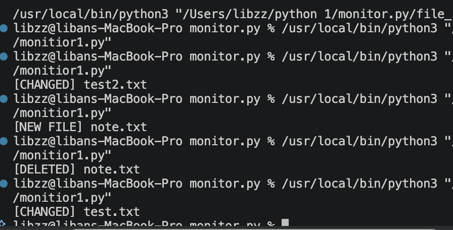

File Integrity Monitor
This project is a simple File Integrity Monitor built with Python. The program monitors files within a selected directory by generating SHA-256 hashes and comparing them against previously stored values.The goal of the project is to detect unauthorised changes to files, including modifications, additions, and deletions.

Technologies Used
- Python
- SHA-256 Hashing
- Hashlib
- JSON
- File Monitoring
Features
- Monitor files in a selected directory
- Generate SHA-256 hashes
- Detect new files
- Detect modified files
- Detect deleted files
- Store hashes in a JSON file
Future Improvements
- Real-time monitoring
- Email notifications
- Detailed logging system
- Graphical user interface (GUI)
- Monitor multiple directories